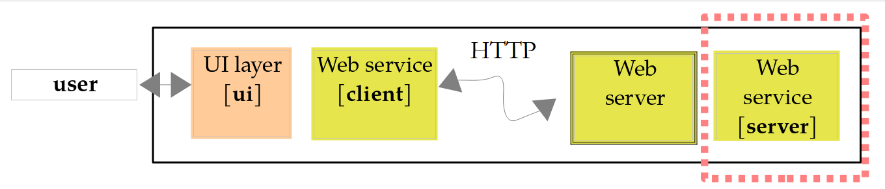

13. Webservices
13.1. Inleiding
In het vorige hoofdstuk hebben we enkele TCP/IP-client-serverapplicaties gepresenteerd. Omdat de clients en de server regels tekst uitwisselen, kunnen ze in elke taal worden geschreven. De client hoeft alleen het communicatieprotocol te kennen dat de server verwacht.
Webservices zijn eveneens serverapplicaties (TCP/IP). Ze hebben de volgende kenmerken:
- ze worden gehost door webservers en het uitwisselingsprotocol tussen client en server is HTTP (HyperText Transfer Protocol), een protocol dat op TCP/IP voortbouwt en dat we in het vorige hoofdstuk hebben verkend;
- de webservice heeft een standaardcommunicatieprotocol, ongeacht de geleverde service. Een webservice biedt diverse services: S1, S2…, Sn. Elk van die services verwacht parameters van de client en geeft een resultaat aan de client terug. Voor elke service moet de client weten:
- hoe de service Si wordt aangeduid;
- de lijst met op te geven parameters en hun types;
- het type resultaat dat de service teruggeeft. Zodra deze elementen bekend zijn, verloopt de dialoog tussen client en server volgens hetzelfde stramien, ongeacht welke webservice wordt aangeroepen. Dit standaardiseert de communicatie van de client;
- Om zich tegen aanvallen vanaf internet te beschermen, openen veel organisaties op hun servers slechts bepaalde poorten naar de buitenwereld: voornamelijk poort 80 (HTTP) en 443 (HTTPS) voor de webservice. Alle andere poorten zijn gesloten. Client-serverapplicaties zoals die in het vorige hoofdstuk zijn daardoor doorgaans beperkt tot het privénetwerk (intranet) van de organisatie. Een service op een webserver hosten maakt haar toegankelijk voor de hele internetgemeenschap;
- de webservice kan worden gezien als een extern object: de services die ze biedt, worden dan methoden van dat object. Een client kan dit externe object gebruiken alsof het lokaal is, via een tussenliggend object dat proxy heet en dat alle netwerkcommunicatie verbergt. Zo kunnen we een client bouwen die onafhankelijk is van deze laag: als de laag verandert, hoeft de rest van de client niet te worden aangepast;
- Net als bij de TCP/IP-client-serverapplicaties uit het vorige hoofdstuk kunnen client en server in elke programmeertaal worden geschreven. Ze wisselen tekstregels uit die uit twee delen bestaan: de headers die het HTTP-protocol vereist en de berichttekst, waarvan het formaat tussen client en server wordt afgesproken.
De architectuur van een client-serverapplicatie op basis van webservices ziet er als volgt uit:

Dit is een uitbreiding van de gelaagde architectuur uit hoofdstuk 6, waaraan gespecialiseerde netwerkcommunicatielagen worden toegevoegd: de webserviceclient aan de clientzijde en de webservice zelf aan de serverzijde. Een soortgelijke architectuur zijn we al tegengekomen bij de TCP-server voor de belastingberekening (versie 8) uit het vorige hoofdstuk.
13.1.1. Gisteren: SOAP en WSDL
In de jaren 2000 volgden webservices meestal de standaard SOAP (Simple Object Access Protocol). De client stuurde een HTTP-aanvraag waarvan de berichttekst een XML-document was: een „envelop" met de naam van de aangeroepen methode en haar parameters. De server antwoordde met een andere XML-envelop met het resultaat. Elke service werd beschreven door een XML-document in het formaat WSDL (Web Services Description Language), beschikbaar op de URL van de service gevolgd door [?wsdl]: het somde de methoden, hun parameters en hun types op. Op basis van dit document genereerden tools automatisch de proxy van de service.
In de JVM werden deze services gedefinieerd met de API en JAX-WS: een klasse met de annotatie [@WebService], waarvan de publieke methoden (die de annotatie [@WebMethod] konden hebben) de methoden van de service werden; de tool [wsimport] genereerde de clientproxy op basis van de WSDL. JAX-WS maakte deel uit van de JDK van Java 6 tot en met Java 10; het werd in Java 11 verwijderd (JEP 320) en bestaat nu buiten de JDK, onder de naam Jakarta XML Web Services. Kotlin, dat in 2016 verscheen (in versie 1.0), speelde in die tijd nog niet echt mee: JAX-WS kan vanuit Kotlin worden gebruikt zoals elke Java-bibliotheek, maar nieuwe services gebruiken het zelden meer. De redenen voor deze verschuiving zijn onder meer de omslachtigheid van XML en SOAP-enveloppen, de complexiteit van de bijbehorende standaarden (WS-Security, WS-Addressing enzovoort) en de moeilijkheid om deze services vanuit een browser aan te roepen.
13.1.2. Vandaag: REST en JSON
De meeste huidige webservices volgen de stijl REST (REpresentational State Transfer) en wisselen JSON-documenten uit (JavaScript Object Notation, gepresenteerd in hoofdstuk 5). De REST-stijl berust op de volgende principes:
- de service stelt resources beschikbaar, elk aangeduid met een URL: [/tax], [/clients/12], [/clients/12/orders];
- deze resources worden benaderd met de methoden (ook werkwoorden genoemd) van het HTTP-protocol, die elk een specifieke betekenis hebben;
- het resultaat van de actie wordt aangegeven door de HTTP-statuscode in het antwoord;
- de berichttekst van aanvragen en antwoorden is meestal een JSON-document, dat compacter en eenvoudiger is dan XML;
- De service is stateless: elke aanvraag bevat alle informatie die nodig is om haar te verwerken; de server onthoudt voor een bepaalde client geen informatie van de ene aanvraag tot de volgende.
De meest gebruikte HTTP-methoden zijn de volgende:
Methode | Gebruik | Voorbeeld |
GET | Een resource lezen; eventuele parameters staan in de URL | GET /clients/12 |
POST | Een resource aanmaken of een verwerking aanvragen; de gegevens staan in de berichttekst van de aanvraag | POST /clients |
PUT | Een resource vervangen | PUT /clients/12 |
PATCH | Een deel van een resource wijzigen | PATCH /clients/12 |
DELETE | Een resource verwijderen | DELETE /clients/12 |
De statuscodes, die in het vorige hoofdstuk zijn geïntroduceerd, krijgen hier hun volledige betekenis:
Code | Betekenis |
200 OK | De aanvraag is geslaagd; de berichttekst van het antwoord bevat het resultaat |
201 Created | De resource is aangemaakt; de header [Location] geeft de URL ervan |
204 No Content | De aanvraag is geslaagd; het antwoord heeft geen berichttekst |
400 Bad Request | De aanvraag is ongeldig (ontbrekende of ongeldige parameter enzovoort) |
404 Not Found | De gevraagde resource bestaat niet |
415 Unsupported Media Type | Het type van het verzonden document (header [Content-Type]) wordt niet geaccepteerd |
500 Internal Server Error | Er is op de server een onverwachte fout opgetreden |
Een REST-service heeft geen verplicht equivalent van WSDL. Het is echter gebruikelijk haar te beschrijven met een OpenAPI-document (voorheen Swagger), in JSON- of YAML-formaat, waaruit tools documentatie, testpagina's en clients kunnen genereren. Hier komen we later op terug.
Let ten slotte op gRPC, ontworpen door Google: de methoden van de service en hun berichten worden beschreven in een [.proto]-bestand, waaruit tools de server en de client genereren, net als in de tijd van WSDL; de berichten worden gecodeerd in een compact binair formaat (Protocol Buffers) en verzonden via HTTP/2. gRPC is zeer efficiënt en populair voor communicatie tussen services binnen dezelfde organisatie, maar is weinig geschikt voor browsers. Het is op de JVM beschikbaar met de bibliotheek [grpc-java], voor Kotlin aangevuld met [grpc-kotlin] (de functies [suspend] en [Flow], hoofdstuk 9), die we niet zullen gebruiken.
13.1.3. Spring Boot en Spring MVC
Om onze webservices te schrijven, gebruiken we Spring Boot. In hoofdstuk 6 gebruikten we de dependency-injectioncontainer van het Spring Framework. Dit framework bevat ook een webmodule, Spring MVC, die met annotaties een URL en een HTTP-methode aan een functie koppelt: [@RestController] op de klasse, [@GetMapping], [@PostMapping]… op de methoden ervan. Spring Boot (versie 1.0 in 2014, versie 4 in november 2025, met Spring Framework 7) vereenvoudigt het gebruik van Spring:
- het configureert automatisch de applicatie op basis van de beschikbare bibliotheken: als Spring MVC en Jackson aanwezig zijn, richt het alles in wat nodig is voor een JSON-webservice, zonder één regel configuratie;
- het bevat de webserver ingebed in de applicatie: de server Tomcat (versie 11) is een eenvoudige bibliotheek, die door het hoofdprogramma wordt gestart. Er hoeft dus geen aparte webserver of applicatieserver (Tomcat, GlassFish, WildFly…) te worden geïnstalleerd, waarop de applicatie vroeger als [.war]-archief werd uitgerold;
- het levert starters: afhankelijkheden die alles bundelen wat nodig is voor een bepaald gebruiksscenario. De starter [spring-boot-starter-webmvc] bevat Spring MVC, Tomcat, Jackson 3 (hoofdstuk 5) en logging (SLF4J en Logback);
- het levert een bill of materials (BOM), die de versies van al deze onderling compatibele bibliotheken vastlegt, en een Gradle-plug-in, [org.springframework.boot], die de applicatie start ([gradlew bootRun]) en verpakt in één uitvoerbaar bestand ([.jar]) ([gradlew bootJar]).
Spring is in Java geschreven, maar behandelt Kotlin sinds Spring Framework 5 (2017) als eersteklastaal: de documentatie bevat voorbeelden in beide talen, Spring ondersteunt de nullable types van Kotlin, kan primaire constructors en hun standaardwaarden aanroepen en biedt Kotlin-specifieke extensiefuncties ([runApplication], [getBean<T>()], [registerBean<T>()] uit hoofdstuk 6…). Spring Boot is niet de enige oplossing: Jakarta EE (voorheen Java EE) definieert de API-standaard JAX-RS (Jakarta RESTful Web Services), en frameworks als Quarkus, Micronaut en Helidon worden ook veel met Kotlin gebruikt. Bijzondere vermelding verdient Ktor, het webframework van JetBrains dat in Kotlin voor Kotlin is geschreven: de routes worden beschreven in een speciale taal (DSL) in plaats van met annotaties, en de handlers zijn [suspend]-functies (hoofdstuk 9). Spring Boot is echter het meest gebruikte framework en bouwt vanzelfsprekend voort op wat we in hoofdstuk 6 hebben behandeld.
13.2. Een eerste webservice
We gaan onze eerste client-serverapplicatie bouwen met de volgende vereenvoudigde architectuur:

De projecten in dit hoofdstuk vormen een Gradle-multiproject-build (hoofdstuk 6), de map [13-web-services]:
Het bestand [settings.gradle.kts] somt de subprojecten op:
- regel 3-6: de plug-in waarmee Gradle zelf JDK 25 kan downloaden als die niet op de machine te vinden is (hoofdstuk 2);
- regel 11: de zes subprojecten, aangeduid met hun mapnamen;
- regel 14: de build van hoofdstuk 6 is hierin opgenomen (samengestelde build, al gebruikt in hoofdstuk 10 en 11): de projecten [WsTax] en [ClientWsTax] kunnen afhankelijk zijn van de modules uit versie 5 van de belastingapplicatie [TaxV5] via hun coördinaten ([examples.tax:tax-business:5.0]), en Gradle bouwt deze modules zo nodig vanuit hun broncode.
Het hoofdproject declareert de plug-ins die de subprojecten gebruiken, samen met hun versies, zonder ze toe te passen:
- regel 4: de Kotlin-plug-in, die we kennen;
- regel 5: de plug-in [all-open] voor Spring, gebruikt in hoofdstuk 6. In Kotlin zijn klassen en hun functies standaard final; Spring moet er echter voor sommige van zijn klassen subklassen (proxy's) van afleiden. Deze plug-in maakt de klassen met Spring-annotaties ([@Configuration], [@Component], [@RestController], [@SpringBootApplication]…) en hun methoden open.
- regel 6: de Spring Boot-plug-in.
De projecten zijn al ingericht in de code van de cursus: de lezer hoeft alleen de map [13-web-services] in IntelliJ IDEA te openen, dat haar als Gradle-build herkent, of in die map de aangegeven Gradle-opdracht in te voeren. Services worden gestart met [gradlew :WsHello:bootRun] (het pad [:WsHello] verwijst naar het subproject) en consoleclients met [gradlew -q :ClientWsHello:run]. De opdracht [gradlew build] bouwt alle projecten in één keer.
Om zelf een Spring Boot-project te maken, is het eenvoudigst de website Spring Initializr te gebruiken: daar kiest u „Gradle - Kotlin" (een Gradle-project waarvan de buildbestanden in Kotlin zijn geschreven), de taal Kotlin, de versie van Spring Boot, de projectnaam en de afhankelijkheden ervan (hier „Spring Web"), waarna u een ZIP-bestand downloadt met een kant-en-klaar project: de bestanden [build.gradle.kts] en [settings.gradle.kts], de Gradle-wrapper, de hoofdklasse en het bestand [application.properties]. IntelliJ IDEA (Ultimate-editie) biedt dezelfde wizard. Voor een Kotlin-project voegt Spring Initializr automatisch de afhankelijkheden [kotlin-reflect] en [jackson-module-kotlin]toe, waarop we nog terugkomen.
13.2.1. De serverzijde

Het bestand [build.gradle.kts] in het project [WsHello] ziet er als volgt uit:
Toelichting:
- regel 3-7: de drie plug-ins, zonder opgegeven versie; de versie wordt bepaald door het hoofdproject. De Spring Boot-plug-in voegt de taak [bootRun] aan het project toe, die de applicatie compileert en uitvoert, en de taak [bootJar], die een bestand met de naam [build/libs/WsHello-1.0.jar] maakt met de applicatie en al haar afhankelijkheden, dat vervolgens wordt gestart met [java -jar build/libs/WsHello-1.0.jar]. De plug-in [application] hoeft niet te worden toegepast: de hoofdklasse wordt gevonden door de Spring Boot-plug-in, die zoekt naar de functie [main];
- regel 19: de versie Spring Boot 4.1.1 (de versie van de plug-in). De functie [platform] importeert in het project de versies van enkele honderden bibliotheken, die het Spring Boot-team samen heeft geselecteerd en getest. Daarom hebben de afhankelijkheden op regel 21-23 geen versies. Dit is het equivalent van het bovenliggende project [spring-boot-starter-parent] in een Maven-project;
- regel 21: de webstarter. Die levert Spring MVC (Spring Framework 7.0), de ingebedde server Tomcat 11, Jackson 3 en logging;
- regel 23: de reflectiebibliotheek van Kotlin. Java-reflectie ([java.lang.reflect]) ziet slechts een deel van wat de Kotlin-code uitdrukt: ze weet niet of een parameter nullable is ([String?]), of hij een standaardwaarde heeft, of wat de primaire constructor van een klasse is. Spring leest deze informatie met [kotlin-reflect] (dat de metagegevens decodeert die de Kotlin-compiler in elk [.class]-bestand opslaat): we zullen zien dat Spring dit gebruikt voor optionele parameters. De gebruikte versie is die van de Kotlin-plug-in;
- regel 31: de compileroptie [-java-parameters], die de namen van functieparameters opslaat in de [.class]-bestanden. Spring heeft dit nodig om een functieparameter ([name]) te koppelen aan de parameter met dezelfde naam in een URL, en Jackson heeft het nodig om de constructorparameters van een dataklasse te koppelen aan de eigenschappen van een JSON-document (hoofdstuk 5). De Spring Boot-plug-in schakelt deze optie al in wanneer hij de Kotlin-plug-in detecteert; we nemen haar hier op om het expliciet te maken;
- regel 35-38: programma's die door Gradle worden gestart, schrijven hun uitvoer in UTF-8, zodat tekens met accenten correct worden weergegeven op Windows (hoofdstuk 2).
De hoofdklasse ziet er als volgt uit:
- regel 7: de annotatie [@SpringBootApplication] combineert drie annotaties: [@Configuration] (de klasse kan beans definiëren, zoals in hoofdstuk 6), [@EnableAutoConfiguration] (automatische configuratie op basis van de beschikbare bibliotheken) en [@ComponentScan] (Spring zoekt geannoteerde klassen, zoals controllers en configuraties, in het pakket van deze klasse en de subpakketten ervan);
- regel 8: de klasse heeft geen body; ze dient alleen om de annotatie te dragen. Omdat ze (indirect) de annotatie [@Configuration] heeft, maakt de plug-in [plugin.spring] haar niet-final. Hier is dat niet essentieel: we hebben gecontroleerd dat de applicatie ook start wanneer de klasse final blijft, omdat Spring geen configuratieklasse hoeft af te leiden die geen beans definieert. Een configuratieklasse die beans definieert met [@Bean]-functies, zoals de service voor de belastingberekening, zou echter de fout [@Configuration class '...' may not be final] veroorzaken die in hoofdstuk 6 is tegengekomen: de plug-in lost dit voor u op;
- regel 10-12: het hoofdprogramma is een functie op hoog niveau, gecompileerd tot de klasse [WsHelloApplicationKt]. De functie [runApplication<WsHelloApplication>(*args)], een in Kotlin geschreven extensiefunctie van Spring Boot, vervangt de Java-aanroep [SpringApplication.run(WsHelloApplication.class, args)]: het type van de configuratieklasse wordt als typeargument doorgegeven ([reified], hoofdstuk 4), en de operator [*] (spread) geeft de elementen van de array [args] door aan de parameter [vararg] van de functie (hoofdstuk 3). [runApplication] leest de configuratie (het bestand [application.properties], omgevingsvariabelen, opdrachtregelargumenten), maakt de Spring-container en haar beans aan, start de Tomcat-server en geeft daarna de besturing terug. Het programma stopt echter niet: de Tomcat-threads wachten op aanvragen totdat de applicatie wordt beëindigd (Ctrl-C).
De configuratie van de applicatie staat in het bestand [src/main/resources/application.properties]:
- regel 2: de naam van de applicatie;
- regel 4: de server luistert op poort 5100 (standaard 8080). Deze waarde kan ook als argument worden doorgegeven: [gradlew :WsHello:bootRun --args=--server.port=5100], of via de omgevingsvariabele [SERVER_PORT];
- regel 6: standaard toont Spring Boot bij het opstarten een grote banner met ASCII-tekst; die verwijderen we;
- regel 8: het formaat van de logberichten. Het standaardformaat is zeer uitgebreid (datum, niveau, proces-ID, applicatienaam, thread, volledige klassenaam, bericht) maar levert zeer lange regels op. We beperken het tot het tijdstip, het niveau van het bericht, de naam van de thread, de korte naam van de verzendende klasse ([%logger{0}]) en het bericht.
De webservice zelf is de klasse [HelloController]. Ze biedt een functie die de tekenreeks [Hello Mrs xx] teruggeeft, waarbij xx de ontvangen naam is:
Toelichting:
- regel 8: de annotatie [@RestController] wijst de klasse aan als controller: Spring maakt bij het opstarten één instantie (een singleton) ervan aan en stuurt HTTP-aanvragen waarvan de URL overeenkomt met een van haar functies, naar haar door. Het resultaat van elke methode wordt ongewijzigd in de berichttekst van het antwoord naar de client gestuurd;
- regel 12-13: de annotatie [@GetMapping("/")] koppelt de HTTP-methode GET met de URL [/] (de root van de site) aan de functie [home], die een tekst teruggeeft waarin wordt uitgelegd hoe de service wordt gebruikt. De functie heeft een expressie als body ([= ...]): het type ervan, [String], wordt afgeleid. De accolades in [{name}] zijn niets bijzonders in een Kotlin-tekenreeks: alleen het teken [$] introduceert een sjabloon;
- regel 18-19: het sjabloon voor de URL (het pad) [/hello/{name}] bevat een variabele [{name}]: ze komt overeen met elk URL-segment dat na [/hello/] staat. Zo kent de URL [/hello/Carla%20Bruni] de waarde [Carla Bruni] toe aan [{name}] (de code [%20] staat voor een spatie in een URL). De annotatie [@PathVariable] geeft Spring de opdracht deze waarde door te geven aan de parameter met dezelfde naam van de functie: dit is databinding. De functie geeft een tekenreeks terug, opgebouwd met een sjabloon: deze tekenreeks wordt ongewijzigd als tekstdocument (type [text/plain]) naar de client gestuurd;
- regel 22-23: hetzelfde proces, maar de functie geeft een object van het type [Greeting] terug. Spring serialiseert het naar JSON met Jackson (hoofdstuk 5) en stuurt het als document van het type [application/json] naar de client. Dit is het standaardformaat voor het antwoord van een REST-webservice;
- regel 26: het resultaattype, een dataklasse (hoofdstuk 4) die in de controller is genest (het equivalent van een Java-record). Jackson serialiseert haar met de accessors [getName()] en [getMessage()], die door de compiler zijn gegenereerd: elke eigenschap wordt een JSON-eigenschap met dezelfde naam.
De service wordt gestart met de opdracht [gradlew :WsHello:bootRun], ingevoerd in de map [13-web-services] (of [..\gradlew bootRun] ingevoerd in de map [WsHello]: de wrapper staat in de root van het project). De uitvoeringsmap van de applicatie is die van het subproject. De service toont haar logboek (in de cursus zijn de paden op regel 2 afgekort tot [...] en zijn de berichten van Gradle weggelaten):
- regel 2: het opstarten van de applicatie, de Java-versie en de uitvoeringsmap, die de projectmap is. Let op de naam [WsHelloApplicationKt]: Spring Boot noemt de applicatie naar de klasse die de functie [main] bevat, in dit geval de klasse die de Kotlin-compiler voor het bestand [WsHelloApplication.kt] heeft gegenereerd, en niet de klasse [WsHelloApplication];
- regel 3: met Spring kunt u profielen (ontwikkeling, test, productie enzovoort) definiëren die verschillende configuraties activeren (bestanden [application-dev.properties] enzovoort). Hier is geen profiel actief;
- Regel 4-6: de ingebedde Tomcat-server wordt aangemaakt; hij luistert op poort 5100;
- regel 7: de Spring-container is gereed: hij heeft zijn beans aangemaakt, waaronder onze controller;
- regel 8-9: Tomcat accepteert nu verbindingen; de applicatie is gereed. Het opstarten duurde op onze testmachine ongeveer vijftien seconden, wat nogal traag is (en de machine had het druk met andere taken); gewoonlijk duurt het twee of drie seconden;
- regel 10-12: deze berichten verschenen bij de eerste aanvraag: de Spring-servlet [DispatcherServlet], die alle aanvragen ontvangt en over de methoden van de controller verdeelt, wordt pas op dat moment geïnitialiseerd. Een servlet is een Java-component die aanvragen verwerkt in een webserver zoals Tomcat (Jakarta Servlet); Spring is hierop gebouwd. De naam van de thread, [http-nio-5100-exec-1], geeft aan dat de aanvraag wordt verwerkt door een van de threads van de Tomcat-server;
- regel 13-14: deze berichten verschenen toen de server met Ctrl-C werd afgesloten, na de tests die in de volgende alinea's worden beschreven: het afsluiten is „soepel" (graceful); Tomcat rondt eventuele lopende aanvragen af voordat hij stopt.
Elk logbericht bevat het tijdstip, het niveau ([TRACE], [DEBUG], [INFO], [WARN], [ERROR]), de thread die het heeft verzonden en de verzendende klasse. Berichten van niveau [INFO] en hoger worden standaard weergegeven; de eigenschap [logging.level.<package>=DEBUG] toont voor een bepaald pakket ook berichten van een lager niveau.
13.2.2. De service aanroepen met curl
Terwijl de service draait, roepen we haar aan in een tweede opdrachtvenster met de tool [curl] die in het vorige hoofdstuk is geïntroduceerd. De optie [-i] toont de headers van het antwoord vóór de berichttekst, en de optie [-s] (silent) onderdrukt de voortgangsbalk:
- regel 2: de aanvraag is geslaagd. Tomcat stuurt de tekst die gewoonlijk op de statuscode volgt ([OK]) niet mee: die is sinds HTTP/1.1 optioneel (en bestaat in HTTP/2 niet meer); alleen de code telt;
- Regel 3: het document is tekst (UTF-8);
- regel 4: de grootte van het document, in bytes;
- regel 5: het tijdstip van het antwoord, in de HTTP-headers altijd uitgedrukt in gecoördineerde wereldtijd (GMT), terwijl het serverlogboek de lokale tijd gebruikt;
- regel 7: het resultaat van de functie [hello].
Vraag nu de JSON-versie op:
- regel 3: het document is nu van het type [application/json]. De tekenset hoeft niet te worden opgegeven: een JSON-document dat via het netwerk wordt uitgewisseld, is altijd gecodeerd in UTF-8 (RFC 8259);
- regel 7: het geserialiseerde [Greeting]-object. De JSON-eigenschappen hebben dezelfde namen als de eigenschappen van de dataklasse, [name] en [message], en staan in de volgorde van haar primaire constructor. Dat was niet vanzelfsprekend: standaard sorteert Jackson 3 de eigenschappen van een gewone klasse alfabetisch (dat zien we bij de klasse [ProblemDetail]), maar hij noemt eerst, in hun volgorde, de eigenschappen die parameters zijn van de constructor die hij heeft gekozen om de objecten aan te maken. Dankzij de optie [javaParameters] kent hij de namen van deze parameters en herkent hij de primaire constructor van de dataklasse. Omdat de Kotlin-namen al in „camelCase" staan, evenals in „JavaScript" en „JSON", hoeft er niets te worden omgezet.
Een URL die met geen enkele route overeenkomt, levert een 404-antwoord op:
- Regel 4: het document wordt in delen (chunks) verzonden, elk voorafgegaan door zijn grootte; de server hoefde de totale grootte van het document niet te berekenen voordat hij begon te verzenden;
- regel 7: het foutdocument dat door Spring Boot wordt gegenereerd: de datum, de statuscode, de tekst ervan en het opgevraagde pad. Om veiligheidsredenen bevat het noch het bericht van een eventuele exceptie, noch de aanroepstack (eigenschappen [server.error.include-message] en [server.error.include-stacktrace], standaard uitgeschakeld). In de volgende service zien we hoe we een gestandaardiseerd foutdocument krijgen.
U kunt de URL [http://localhost:5100/hello/Carla Bruni] ook in de adresbalk van een browser typen, die de ontvangen tekst weergeeft: een webservice die met GET wordt aangeroepen, is zeer eenvoudig te testen.
13.2.3. Een consoleclient

Het is mogelijk de client van de service te schrijven met een eenvoudige TCP-client, zoals in het vorige hoofdstuk: u stuurt eenvoudig de HTTP-aanvraag en leest het antwoord. We gebruiken echter de klasse [java.net.http.HttpClient] van de JDK (Java 11), die eveneens in het vorige hoofdstuk is geïntroduceerd; ze verzorgt voor ons het HTTP-protocol en gebruikt Jackson voor de JSON-documenten. Het project [ClientWsHello] is een standaard Kotlin-project, waarvan het bestand [build.gradle.kts] de afhankelijkheid van Jackson en de hoofdklasse declareert:
- regel 3: de afhankelijkheid van Jackson 3; ze heeft een versie omdat dit project de naamgevingsconventie van Spring Boot niet gebruikt;
- regel 11: Jackson heeft de namen van de constructorparameters nodig om een object [Greeting] uit een JSON-document aan te maken (hoofdstuk 5);
- regel 15-17: de hoofdklasse, uitgevoerd door [gradlew -q :ClientWsHello:run];
- Regel 20-22: het programma leest van het toetsenbord.
Het programma ziet er als volgt uit:
Toelichting:
- regel 13: het antwoord van de service, in JSON, wordt gedeserialiseerd tot een object [Greeting]. De client heeft geen toegang tot het type [Greeting] van de server: hij declareert zijn eigen type, een dataklasse met dezelfde eigenschapnamen. Een client deelt niet de code van de server, alleen het formaat van de uitgewisselde documenten;
- regel 18: de URL van de service wordt als argument doorgegeven; anders is de standaardwaarde [http://localhost:5100/]: als het adres van de service verandert, hoeft de client niet opnieuw te worden gecompileerd. [firstOrNull()] geeft het eerste element van de array terug, of [null] als de array leeg is, en de Elvis-operator [?:] vervangt deze [null] door de standaard-URL;
- regel 20: de JSON-converter van Jackson 3 (hoofdstuk 5);
- regel 23: één enkele [HttpClient] voor het hele programma. Hij beheert een reeks herbruikbare verbindingen en moet worden gedeeld, niet voor elke aanvraag opnieuw worden aangemaakt. Sinds Java 21 implementeert [HttpClient] de interface [AutoCloseable]: de Kotlin-functie [use] (hoofdstuk 3) sluit hem aan het einde van het blok, ook als er een exceptie optreedt;
- regel 26-27: de vraag, gevolgd door het lezen van het antwoord; aan het einde van de stroom geeft [readlnOrNull] de waarde [null] terug, die de Elvis-operator omzet in een lege tekenreeks;
- regel 33: de ingevoerde naam wordt een segment van de URL: tekens die daar niet zijn toegestaan, moeten worden gecodeerd. [URLEncoder.encode] codeert de „é" als [%C3%A9], maar is ontworpen voor formulierparameters, waarin een spatie wordt gecodeerd als [+]. In een URL-pad moet de spatie worden gecodeerd als [%20]: daarom vervangen we het [+] (een ingevoerd, geldig [+] wordt gecodeerd als [%2B] en wordt niet geraakt). [Charsets.UTF_8] is de Kotlin-constante voor de tekenset UTF-8 (de Java-constante, [StandardCharsets.UTF_8], werkt ook);
- regel 35: de methode [resolve] van de klasse [URI] construeert een URL uit de basis-URL en een relatieve URL. Let op: de basis-URL moet eindigen op [/] opdat [hello/...] eraan wordt toegevoegd. De functie [get] wordt aangeroepen als methode van [HttpClient]: het is een extensiefunctie, die hieronder is gedefinieerd;
- regel 38-39: de JSON-respons wordt gedeserialiseerd tot een object [Greeting] met de methode [readValue] van Jackson;
- regel 41-43: de exceptie [ConnectException] wordt gegenereerd wanneer geen verbinding met de service mogelijk is, bijvoorbeeld wanneer er op het opgegeven adres geen service luistert. Ze heeft geen bericht; we construeren er een. De naam [_] geeft aan dat de exceptie niet wordt gebruikt. Dit [catch] moet vóór die op regel 44 staan, omdat [ConnectException] is afgeleid van [IOException];
- regel 44-46: andere communicatiefouten en foutantwoorden van de service (zie regel 59);
- regel 54-61: een GET-aanvraag waarvan de berichttekst als tekenreeks wordt teruggegeven. We hebben haar geschreven als extensiefunctie van de klasse [HttpClient] (hoofdstuk 4): binnen haar body verwijst
[send]naar de methode[send]van de client waarop ze wordt aangeroepen (*[this]*). In Java was dit een statische methode die de client als parameter kreeg; - regel 55: de aanvraag wordt opgebouwd met een builder: de URL, de HTTP-methode en vervolgens [build];
- regel 56: de methode [send] verstuurt de aanvraag en wacht op het antwoord. Haar tweede parameter, een [BodyHandler], geeft aan wat er met de berichttekst van het antwoord moet gebeuren: [ofString] leest haar geheel in een tekenreeks, gedecodeerd volgens de tekenset die de header [Content-Type] aangeeft (standaard UTF-8). [send] genereert [IOException] bij een communicatiefout en [InterruptedException] als de thread tijdens het wachten wordt onderbroken. Omdat Kotlin geen gecontroleerde excepties kent, hoeven noch de functie [get] noch de functie [main] ze te declareren ([throws IOException, InterruptedException] in Java);
- regel 58-59: anders dan andere bibliotheken behandelt [HttpClient] een foutstatuscode (4xx, 5xx) niet als een exceptie: het antwoord wordt gewoon teruggegeven en het is aan ons om de statuscode te onderzoeken. Hier genereren we een [IOException] voor elke andere code dan 2xx.
Resultaten, met draaiende service (de invoergegevens, die via een omleiding aan het programma zijn verstrekt, zijn na de vragen weer ingevoegd):
regel 4 toont het ontvangen object [Greeting] in het formaat van de functie [toString] die voor dataklassen wordt gegenereerd: [Greeting(name=…, message=…)], waar een Java-record voorheen [Greeting[name=…, message=…]] toonde. De Gradle-optie [-q] (quiet) onderdrukt zijn eigen berichten. Als u een adres opgeeft waar geen service luistert, wordt de verbinding geweigerd:
En als de URL van de service onjuist is, geeft de service een 404 terug:
De klasse [Greeting] van de client heeft twee niet-nullable eigenschappen van het type [String]. Wat zou er gebeuren als de service er een wegliet, bijvoorbeeld [message]? Jackson zou de constructor aanroepen met de waarde [null] voor de parameter [message], en de code die de Kotlin-compiler genereert, en die bij het binnenkomen van elke publieke functie controleert dat haar niet-nullable parameters niet [null] zijn, zou deze waarde weigeren. We hebben dit met een klein testprogramma gecontroleerd:
De veiligheid ten aanzien van [null] blijft dus behouden, ook voor objecten die via reflectie worden aangemaakt. Een ontbrekende eigenschap van het type [Int] wordt daarentegen door Jackson 3 zelf geweigerd (***[Cannot mapnullinto typeint]***). Om toe te staan dat een eigenschap ontbreekt, wordt ze als nullable gedeclareerd ([String?], [Int?]); dat zullen we in de volgende services doen. De Kotlin-module van Jackson, [jackson-module-kotlin] (afhankelijkheid [tools.jackson.module:jackson-module-kotlin]), gaat een stap verder: ze ondersteunt standaardwaarden voor parameters (een ontbrekende eigenschap krijgt de standaardwaarde) en levert specifiekere foutberichten. Ze biedt ook de extensiefunctie [mapper.readValue<Greeting>(json)], die [mapper.readValue(json, Greeting::class.java)] vervangt. Wanneer ze tot de afhankelijkheden van een Spring Boot-applicatie behoort, registreert de applicatie haar automatisch bij de JSON-converter van Spring (MVC); Spring Initializr voegt haar ook aan Kotlin-projecten toe. We gebruiken haar in deze cursus niet, omdat de dataklassen en de optie [javaParameters] voor onze behoeften volstaan.
Bij een SOAP-service gebruikte de client een proxy die uit de WSDL van de service was gegenereerd en riep hij de externe methode aan alsof het een lokale methode was. Hier roepen we rechtstreeks de URL van de service aan. We zullen een echte proxy schrijven voor de service voor de belastingberekening.
13.2.4. Beschrijving van de service: OpenAPI
De WSDL beschreef een SOAP-service in een gestandaardiseerd formaat. Het huidige equivalent is het document OpenAPI. Voor Spring Boot genereert de bibliotheek [springdoc-openapi] (afhankelijkheid [org.springdoc:springdoc-openapi-starter-webmvc-ui]) het zonder één regel code: ze scant bij het opstarten de controllers en hun annotaties en publiceert het document op de URL [/v3/api-docs], evenals een interactieve testpagina, Swagger UI, op de URL [/swagger-ui.html]. Het document beschrijft elke route: de URL, de HTTP-methode, de parameters en hun types, en het JSON-schema van de antwoorden. Bij Kotlin houdt het rekening met de nullability van types: een eigenschap van het type [String] wordt als verplicht gedeclareerd, terwijl een eigenschap van het type [String?] optioneel is. Generatoren zoals OpenAPI Generator gebruiken dit om een getypeerde client in diverse talen (waaronder Kotlin) te genereren, net zoals [wsimport] dat deed met WSDL. Deze bibliotheek maakt geen deel uit van Spring Boot en we zullen haar in dit hoofdstuk niet gebruiken.
13.3. Een webservice voor rekenkundige bewerkingen
De vorige service bood één functie. We bekijken nu een webservice die de vier rekenkundige bewerkingen biedt: add(a, b), subtract(a, b), multiply(a, b) en divide(a, b). We gebruiken deze gelegenheid om de twee manieren te verkennen waarop parameters aan een webservice kunnen worden doorgegeven en hoe fouten worden gemeld.
13.3.1. De serverzijde
De service [WsOperations] accepteert twee soorten aanvragen:
Aanvraag | Parameters |
GET /add?a=1.5&b=2 | De bewerking in het URL-pad, de getallen in de querystring |
POST /calculation | een JSON-document in de body van het verzoek: [{"operation":"add","a":1.5,"b":2}] |
In beide gevallen is het antwoord een JSON-document: [{"operation":"add","a":1.5,"b":2.0,"result":3.5}]. GET is geschikt voor eenvoudige verzoeken die niets op de server wijzigen: de URL kan in een browser worden getypt en als bladwijzer worden opgeslagen, en het antwoord kan in de cache worden bewaard. POST is geschikt voor omvangrijke of gestructureerde gegevens. Het bestand [build.gradle.kts] van het project is gelijk aan dat van [WsHello], afgezien van de opmerking, en het bestand [WsOperationsApplication.kt] is identiek aan dat van [WsHello], afgezien van de namen ([WsOperationsApplication], pakket [wsoperations]). Het bestand [application.properties] ziet er als volgt uit:
- regel 4: de service luistert op poort 5110;
- regel 6: fouten die door Spring MVC zelf worden gedetecteerd (onbekende URL, ongeldig JSON-document, niet-ondersteund documenttype enzovoort) worden gemeld via een antwoord in het formaat Problem Details . Dit formaat, gestandaardiseerd door RFC 9457, is een JSON-document van het type [application/problem+json] dat een fout beschrijft: het type, een titel, de statuscode, een detail en eventuele aanvullende informatie. Dit is de standaardmanier waarop een REST-service aangeeft wat er mis is.
De controller ziet er als volgt uit:
Toelichting:
- Regels 20-25: het GET-verzoek. De parameter [operation] van de functie is gekoppeld aan de routevariabele [{operation}] ([@PathVariable]). De parameters [a] en [b], geannoteerd met [@RequestParam], zijn gekoppeld aan de parameters met dezelfde naam in de querystring ([?a=1.5&b=2]). Ze zijn optioneel: een ontbrekende parameter krijgt standaard de waarde [null]. In Java moest u dit schrijven als ([@RequestParam(required = false) String a]); in Kotlin declareert u de parameter gewoon als nullable, [String?]: Spring leest de nullability van het type via [kotlin-reflect] en leidt af dat de parameter optioneel is. Omgekeerd is een niet-nullable parameter ([String]) verplicht: Spring zou een verzoek zonder deze parameter afwijzen met een 400-antwoord. Het gedeclareerde type vertelt dus zowel de compiler als Spring wat er mogelijk ontbreekt;
- regels 23-24: [a] en [b] zijn gedeclareerd als type [String?]. We hadden ze ook als type [Double?] kunnen declareren: Spring zou de conversie dan zelf hebben uitgevoerd en een onjuiste waarde hebben afgewezen met een 400-antwoord met de generieke melding. Doordat we ze als tekenreeksen ontvangen, houden we controle over de foutmeldingen;
- regel 25: de functie heeft een expressietorso (expression body). Het retourtype, [ResponseEntity<*>], is expliciet opgegeven: het type met sterretje [*] (Hoofdstuk 4) staat voor een antwoord waarvan het type van de body niet is gespecificeerd, het equivalent van [ResponseEntity<?>] in Java;
- regels 29-31: het POST-verzoek. De parameter [request], geannoteerd met [@RequestBody], wordt door Jackson opgebouwd uit het JSON-document in de body van het verzoek. De eigenschappen van de klasse [CalculationRequest] zijn nullable (regel 79): een eigenschap die in het JSON-document ontbreekt, krijgt dan de waarde [null], waardoor dit kan worden gedetecteerd;
- regel 35: een tekenreeks omzetten naar een getal; als de omzetting mislukt ([null]), wordt dit als expressie geschreven. De operator [?.] geeft de [null] van een ontbrekende tekenreeks door; de Kotlin-functie [toDoubleOrNull] geeft [null] terug in plaats van een exception te genereren; de functie [takeIf] geeft haar object terug als de voorwaarde waar is, anders [null] : hier wijst zij de waarden [NaN] en oneindig af, die [toDoubleOrNull] wel accepteert (de teksten [NaN] en [Infinity]). Zowel in een URL als in JSON worden getallen met een decimale punt geschreven: [toDoubleOrNull], dat onafhankelijk is van de systeemtaal, is dus het juiste hulpmiddel (en niet [NumberFormat], dat op een Franse server een komma zou verwachten; zie Hoofdstuk 5). In Java was een blok van [try]/[catch] nodig rond [Double.parseDouble];
- regel 40: de naam van de bewerking, in kleine letters. De Kotlin-functie [lowercase] voert de omzetting uit ongeacht de systeemtaal (zij gebruikt [Locale.ROOT], dat in Java expliciet moest worden opgegeven);
- regels 42-47: de gevraagde bewerking wordt weergegeven door een functie van het type [(Double, Double) -> Double] (Hoofdstuk 7), die nullable is: [((Double, Double) -> Double)?]. Een [when]-expressie selecteert de lambda die bij de bewerking hoort; [null] wordt gebruikt voor een onbekende bewerking. Het gedeclareerde type van
*[calculation]stelt de compiler in staat de types van de lambdaparameters*[x]en*[y]* af te leiden; - regels 50-64: de drie parameters worden gevalideerd. Als een van deze onjuist is, wordt een foutenlijst opgebouwd: een dictionary die elke parameter koppelt aan zijn lijst met foutmeldingen. De functie [buildMap], die tot dezelfde familie behoort als [buildString] en [buildList] (Hoofdstuk 5), maakt een muteerbare dictionary aan en geeft die als receiver ([this]) door aan het blok, waarin [put] hem vult en hem daarna alleen-lezen maakt; de invoegvolgorde blijft behouden;
- regels 60-64: het 400-antwoord. De Spring-klasse [ProblemDetail] vertegenwoordigt een „Problem Details”-document: [forStatus] maakt het aan met een statuscode. De functie [apply] (Hoofdstuk 4) voert het blok uit met het aangemaakte object als receiver en geeft dat object vervolgens terug: de titel wordt ingesteld door de eigenschap [title] te schrijven (Kotlin behandelt de Java-methoden [getTitle]/[setTitle] als eigenschappen) en met [setProperty] wordt een willekeurige eigenschap toegevoegd, in dit geval [errors], de lijst met fouten. De klasse [ResponseEntity] vertegenwoordigt een volledig HTTP-antwoord: statuscode, headers en body. [ResponseEntity.badRequest()] bereidt een 400-antwoord voor en [body] levert de body;
- regel 66: na de [return] op regel 64 weet de compiler dat [calculation], [a] en [b] niet [null] zijn: het zijn lokale variabelen (of parameters) die niet meer kunnen veranderen. Hij behandelt ze nu als waarden van niet-nullable types [(Double, Double) -> Double] en [Double]: dit is de „smart cast” die in Hoofdstuk 3 is besproken. We hebben de test zo opgebouwd dat hiervan gebruik wordt gemaakt: de Java-code testte elke parameter afzonderlijk en verzamelde fouten in een dictionary, en controleerde daarna of de dictionary leeg was; die slotcontrole zou de compiler echter niets vertellen over [a] en [b];
- regels 68-72: een deling door nul leidt tot een 400-antwoord, en ditmaal bevat het document een detail ([forStatusAndDetail]). Deze afwijzing is noodzakelijk: een [Double] door nul delen genereert geen exception maar levert oneindig op ([Double.POSITIVE_INFINITY]), wat een JSON-document niet kan weergeven (Jackson zou het als tekenreeks schrijven, ["Infinity"]). De test [b == 0.0] vergelijkt twee [Double]-waarden: de literal moet [0.0] zijn, omdat Kotlin weigert een [Double] te vergelijken met een [Int] ([b == 0] veroorzaakt een compilatiefout [operator '==' cannot be applied to 'Double' and 'Int']);
- regel 75: het 200-antwoord, waarvan de body het naar JSON geserialiseerde object [CalculationResult] is. [calculation(a, b)] roept de hierboven geselecteerde functie aan;
- regels 79-82: de twee types die met clients worden uitgewisseld. Deze objecten, die alleen dienen om gegevens tussen twee applicaties te transporteren, heten DTO (Data Transfer Object). Dataklassen zijn hiervoor ideaal. De eigenschappen van [CalculationRequest], die van de client worden ontvangen, zijn nullable; die van [CalculationResult], die door de service worden geproduceerd, niet.
De twee functies van de controller retourneren het type [ResponseEntity<*>]: een antwoord waarvan de body van elk type kan zijn, in dit geval een [CalculationResult] of een [ProblemDetail]. Spring onderzoekt het werkelijke type van de body om die te serialiseren; het kent het document het type [application/json] toe, of [application/problem+json] voor een [ProblemDetail].
13.3.2. Testen met curl
De service wordt gestart met [gradlew :WsOperations:bootRun]. Een optelling:
Het getal 2 is 2.0 geworden: Jackson schrijft een [Double] altijd met zijn decimale deel. Voor een client, in het bijzonder JavaScript, is het hetzelfde getal. Een deling door nul:
- Regel 2: het verzoek wordt geweigerd;
- regel 3: de body is een „Problem Details”-document;
- regel 6: na een 400-antwoord sluit Tomcat de verbinding uit voorzorg: een ongeldig verzoek kan onverwachte gegevens in de verbinding hebben achtergelaten. De client opent een andere verbinding voor zijn volgende verzoek;
- regel 8: het document bevat de eigenschappen [title], [status] en [detail], ingesteld door onze code, en [instance], toegevoegd door Spring: het pad van het verzoek dat de fout veroorzaakte. De eigenschap [type], een URL die het fouttype documenteert, ontbreekt: RFC 9457 kent haar dan de waarde [about:blank] toe, wat betekent dat de statuscode volstaat om het probleem te beschrijven. Merk op dat de eigenschappen alfabetisch zijn gesorteerd: dit is het standaardgedrag van Jackson 3 voor een gewone Java-klasse zoals [ProblemDetail], waarvan de objecten niet worden aangemaakt met een geparametriseerde constructor; dataklassen behouden, zoals we hebben gezien, de volgorde van hun primaire constructor.
Een onbekende bewerking, een getal met een decimale komma en een ontbrekend getal:
De eigenschap [errors] van het document bevat de validatiefouten, per parameter; omdat zij met [setProperty] is toegevoegd, staat zij na de genormaliseerde eigenschappen. De parameter [b], die in de URL ontbreekt, is inderdaad ontvangen als [null]: zij is optioneel omdat zij nullable is. Nu een POST-verzoek. De optie [-d] van [curl] stuurt de tekst die erop volgt in de body van een POST-verzoek mee, en de optie [-H] voegt een header aan het verzoek toe, in dit geval het type van het verzonden document:
Een eigenschap die in het JSON-document ontbreekt, hier [operation], wordt ontvangen als [null] dankzij het nullable type van de eigenschap [operation] van [CalculationRequest]; de bewerking is dan onbekend:
Als het verzonden JSON-document onjuist is, kan Jackson de parameter [request] niet opbouwen: Spring geeft zelf een 400-fout terug, zonder onze functie uit te voeren:
Het „Problem Details”-document op regel 8 is gegenereerd door Spring MVC, dankzij de eigenschap [spring.mvc.problemdetails.enabled]; zonder deze eigenschap zouden we het foutdocument van Spring Boot krijgen dat we bij [WsHello] hebben gezien. Hetzelfde geldt als de header [Content-Type] wordt weggelaten: [curl] verstuurt de body dan als een HTML-formulier, en Spring wijst dit type document af:
Foutcode 415 (Unsupported Media Type) betekent dat het type van het verzonden document niet wordt geaccepteerd; de header [Accept] op regel 3 vertelt de client welke types worden geaccepteerd.
13.3.3. De clientzijde
Onze consoleclient vraagt de bewerking en de twee getallen op één regel en bevraagt vervolgens twee keer de service: eerst met GET, daarna met POST, om beide methoden te demonstreren. Het bestand [build.gradle.kts] is identiek aan dat van [ClientWsHello], afgezien van de namen van het project en de hoofdklasse ([clientwsoperations.MainKt]). Het programma ziet er als volgt uit:
1 2 3 4 5 6 7 8 9 10 11 12 13 14 15 16 17 18 19 20 21 22 23 24 25 26 27 28 29 30 31 32 33 34 35 36 37 38 39 40 41 42 43 44 45 46 47 48 49 50 51 52 53 54 55 56 57 58 59 60 61 62 63 64 65 66 67 68 69 70 71 72 73 74 75 76 77 78 79 80 81 82 83 84 85 86 87 88 89 90 91 92 93 94 95 96 97 98 99 100 101 102 103 104 105 106 107 108 109 110 111 112 113 114 115 | |
Toelichting:
- Regels 14-23: de DTO-bestanden van de client. Ze worden hier opnieuw gedeclareerd: een client deelt niet de code van de server, alleen het formaat van de uitgewisselde JSON-documenten. De eigenschappen van [CalculationRequest] zijn niet nullable: de client verstuurt alleen volledige verzoeken. De klasse [ProblemDetail] van Spring maakt deel uit van het webframework; voor de client volstaat een eenvoudige dataklasse. De eigenschappen ervan zijn nullable: een eigenschap die in het document ontbreekt, zoals [detail] of [errors], wordt behandeld als [null];
- regel 27: getallen worden ingevoerd en weergegeven in het formaat van de systeemtaal, in dit geval Engels: decimale punt. [FORMAT] is een eigenschap op het hoogste niveau, privé voor het bestand;
- regel 33: vanaf Jackson 3 worden JSON-eigenschappen die onbekend zijn voor de klasse (hier [instance]) bij deserialisatie standaard genegeerd;
- regels 43-49: de invoer wordt met een reguliere expressie (een of meer spaties) in velden gesplitst, waarna de lijst van drie elementen wordt uitgepakt in drie variabelen (Hoofdstuk 3): de declaratie [val (operation, textA, textB) = fields] roept de functies [component1()], [component2()], en [component3()] van de lijst aan;
- regels 50-58: de getallen worden lokaal gecontroleerd voordat een aanroep van de service plaatsvindt. Een service moet haar parameters altijd controleren (want zij weet niet wie haar aanroept), maar een client kan onnodig netwerkverkeer vermijden. Na [continue] op regel 59 weet de compiler dat [a] en [b] niet [null] zijn: ze zijn nu van het type [Double] (intelligente typeconversie);
- regel 61: de tekst die de berekening beschrijft, met de getallen in het formaat van de systeemtaal;
- regel 64: de URL van het GET-verzoek. Getallen moeten met een decimale punt worden geschreven: een [Double] die in een stringtemplate wordt ingevoegd, wordt omgezet door zijn functie [toString], die onafhankelijk is van de systeemtaal. De bewerking, die door de gebruiker is ingevoerd, wordt gecodeerd met [URLEncoder];
- regels 66-67: het GET-verzoek;
- regels 68-70: bij succes (statuscode 200) wordt het JSON-antwoord gedeserialiseerd naar een object [CalculationResult];
- regels 72-73: als het verzoek mislukt, worden de statuscode en het ontvangen document ongewijzigd weergegeven;
- regels 75-77: de exception [IOException] wijst op een communicatiefout, zoals een onbereikbare service;
- regels 82-86: het POST-verzoek. Het object [CalculationRequest] wordt door [writeValueAsString] naar JSON geserialiseerd; het verzoek krijgt de header [Content-Type], gevolgd door de body: [BodyPublishers.ofString] verstuurt een tekenreeks, gecodeerd als UTF-8;
- regels 94-98: als de validatie mislukt, is de body een „Problem Details”-document, gedeserialiseerd naar een object [Problem], waarvan de titel, de details en de validatiefouten worden weergegeven. De nullable eigenschappen [detail] en [errors] worden afgehandeld met de operator [?.]: [problem.detail?.let { ... }] voert het blok alleen uit als het detail bestaat ([it] is dan van het type [String]), en [problem.errors?.forEach { ... }] doorloopt de dictionary alleen als die bestaat. De lambda die aan [forEach] wordt doorgegeven, ontvangt elk element van de dictionary ([Map.Entry]), uitgepakt in [(parameter, messages)] (Hoofdstuk 7); de functie [joinToString] voegt de meldingen van een parameter samen;
- regels 110-114: een getal lezen in het formaat van de systeemtaal. De methode [parse(String, ParsePosition)] van [NumberFormat] leest het begin van de tekenreeks en geeft in het object [ParsePosition] aan waar zij is gestopt (eigenschap [index], Java-methode [getIndex()]): als zij niet aan het einde is gestopt, bevat de invoer extra tekens ([2.5x]). [parse] geeft een [Number] terug (of [null]), dat wordt omgezet door [toDouble()].
Resultaten, terwijl de service draait (invoer na de bevragingen ingevuld):
- regel 3: de URL van het GET-verzoek: het daar ingevoerde getal 2 wordt geschreven als 2.0;
- regels 6-8: dezelfde fout, waargenomen bij beide verzoeken: het onbewerkte document bij het GET-verzoek en de verwerking ervan bij het POST-verzoek;
- regels 10-12: de onbekende bewerking is door de service gedetecteerd;
- regel 14: het onjuiste getal is door de client gedetecteerd, die de service niet heeft bevraagd.
13.4. Voorbeeldapplicatie - Versie 9: een webservice voor de belastingberekening
We komen terug op de applicatie voor de belastingberekening. In het vorige hoofdstuk (versie 8) hadden we een server met de naam TCP gemaakt die op afstand kon worden bevraagd via een eigen communicatieprotocol. Nu maken we er een webservice met de naam REST van.
13.4.1. De architectuur
De architectuur van versie 9 ziet er als volgt uit:

- aan de serverzijde ontvangt de webservice [WsTax] HTTP-verzoeken en laat die verwerken door de lagen [business] en [dao] uit versie 5 (Hoofdstuk 6), die ongewijzigd worden hergebruikt;
- aan de clientzijde wordt de laag [ui] uit versie 5 eveneens ongewijzigd hergebruikt. Zij communiceert met een nieuw type laag [business], [TaxBusinessHttp], die de interface [ITaxBusiness] implementeert door de webservice te bevragen: zij fungeert als proxy voor de service. De laag [ui] weet niet dat de berekening op een andere machine wordt uitgevoerd;
- aan beide zijden wordt de integratie van de lagen verzorgd door de dependency-injectiecontainer van Spring, net als in versie 5.
13.4.2. De webservice
Het servicecontract ziet er als volgt uit:
Verzoek | Antwoord bij succes | Antwoord bij een fout |
GET /tax?married=y&children=2&salary=60000 | 200: [{"tax":4282}] | 400: „Problem Details”-document |
POST /tax met de body [{"married":true,"children":2,"salary":60000}] | 200: [{"tax":4282}] | 400: „Problem Details”-document |
Het project [WsTax] is afhankelijk van de modules [tax-dao] en [tax-business] uit versie 5. Dankzij de composite build die is gedeclareerd in [settings.gradle.kts] ([includeBuild("../06-architectures")]) vindt Gradle ze rechtstreeks in de map van Hoofdstuk 6 en bouwt hij ze indien nodig: anders dan bij Maven hoeven ze niet eerst in een lokale repository te worden geïnstalleerd. De dependencies in het bestand [build.gradle.kts] van [WsTax] zijn als volgt (de rest van het bestand is gelijk aan dat van [WsHello], afgezien van de coördinaten van het project: [examples.tax:WsTax:9.0]):
- regels 2-5: de dependencies van elke Spring Boot-service die in Kotlin is geschreven;
- regel 8: de module [tax-business] uit versie 5, geïdentificeerd door haar coördinaten. Zij declareert de module [tax-dao] als een dependency van haar API ([api(project(":TaxV5:tax-dao"))], Hoofdstuk 6): die module is dus ook zichtbaar voor de service, samen met de klassen [ITaxDao], [JsonTax]… uit de laag [dao] en [TaxBracket] , en [TaxException] uit de laag [entities]. De module [tax-dao] is afhankelijk van Jackson 3, die de web-starter al levert; daarom wordt de versie gebruikt die door de dependencylijst van Spring Boot is geselecteerd.
Het configuratiebestand [application.properties] ziet er als volgt uit:
- regel 4: de service luistert op poort 5120;
- regels 13-14: de configuratie voor de laag [dao], in hetzelfde formaat als in het bestand [tax.properties] uit versie 5: de te gebruiken implementatie en het bijbehorende gegevensbestand. Dit zijn geen eigenschappen van Spring Boot, maar eigenschappen die specifiek zijn voor onze applicatie: een bestand [application.properties] kan er zoveel bevatten als gewenst. Hier gebruiken we het JSON-bestand [TaxData.json], dat zich in de projectmap bevindt; dit is, bij [gradlew :WsTax:bootRun], de map waarin de service draait.
De lagen [dao] en [business] worden via een configuratieklasse in de Spring-container geïntegreerd:
Toelichting:
- regels 17-18: de configuratie-eigenschappen [dao.*] worden gegroepeerd in een object van het type [DaoProperties], een dataklasse. De annotatie [@ConfigurationProperties("dao")] geeft Spring Boot de opdracht de eigenschappen met het prefix [dao] te koppelen aan de constructorparameters met dezelfde naam: [dao.implementation] aan de parameter [implementation], [dao.file] aan de parameter [file]. Voor eigenschappen die in de configuratie ontbreken, worden de standaardwaarden van de parameters gebruikt: Spring Boot, dat de primaire constructor en de standaardwaarden ervan via [kotlin-reflect] leest, weet de constructor aan te roepen zonder de ontbrekende argumenten. We hebben dit gecontroleerd door de service te starten zonder het bestand [application.properties]: zij gebruikte de implementatie [HardwiredTax]. Deze koppeling is getypeerd (een eigenschap van het type [Int] of [Boolean] zou worden omgezet, en een onjuiste waarde zou het opstarten verhinderen) en het resulterende object is onveranderlijk;
- regel 22: de annotatie registreert de klasse [DaoProperties] bij Spring Boot, dat het object bij het opstarten aanmaakt en er een bean van maakt. U kunt ook [@ConfigurationPropertiesScan] op de hoofdklasse plaatsen: Spring Boot zoekt dan zelf naar klassen die zijn geannoteerd met [@ConfigurationProperties];
- regels 21-23: de annotatie [@Configuration] (Hoofdstuk 6): de klasse definieert beans. Spring vindt haar omdat zij zich in hetzelfde pakket bevindt als de hoofdklasse ([@ComponentScan]). De plug-in [plugin.spring] maakt haar, samen met haar functies, open;
- regels 27-32: de geannoteerde functie [@Bean] maakt de laag [dao] aan. De parameter ervan wordt door Spring geleverd: het is de bean [DaoProperties]. Een [when]-expressie selecteert de implementatie; een onbekende implementatie veroorzaakt een [TaxException] ([throw] is in Kotlin een expressie: zij kan voorkomen in een tak van [when]);
- regel 38: de laag [business]. De parameter [dao] van de functie ontvangt de bean van het type [ITaxDao]: Spring maakt dus de laag [dao] aan vóór de laag [business].
In Hoofdstuk 6 werd elke eigenschap afzonderlijk geïnjecteerd met de annotatie [@Value]: [@Value("\${dao.implementation}") implementation: String]. Deze aanpak is met Spring Boot nog steeds mogelijk; houd er rekening mee dat in Kotlin het teken [$] in [${...}] met een backslash moet worden geëscaped, anders zou de compiler het als stringtemplate interpreteren. [@ConfigurationProperties] verdient de voorkeur zodra een groep eigenschappen bij elkaar hoort: de configuratie wordt beschreven door een klasse, die is getypeerd en bij het opstarten wordt gevalideerd, en die in één keer wordt geïnjecteerd waar zij nodig is. De functies [dao] en [business] nemen die van de klasse [TaxConfig] uit versie 5 over, zonder de annotatie [@PropertySource]: Spring Boot leest het bestand [application.properties] zelf.
Deze regels vervangen de integratie van de lagen die in versie 5 door het hoofdprogramma werd verzorgd: de Spring-container is dezelfde, maar Spring Boot maakt hem nu aan en vindt de configuratieklasse zelf. De beans die op deze manier zijn gedefinieerd, zijn singletons, die worden aangemaakt wanneer de applicatie start, voordat er verzoeken worden verwerkt: als het gegevensbestand ontbreekt of onjuist is, start de service niet, in plaats van op alle verzoeken met een 500-fout te antwoorden. We controleren dit later.
De webservice is de controller [TaxController]:
Toelichting:
- regel 17: de controller ontvangt de laag [business] via zijn primaire constructor. Spring, dat de controller aanmaakt, geeft hem de bean [ITaxBusiness] mee die door [TaxConfig] is gedefinieerd: dit is constructorinjectie, zoals besproken in Hoofdstuk 6. De eigenschap [business], gedeclareerd als [private val] in de constructor, garandeert dat de laag niet verandert. De Java-code vereiste een veld [final] en een constructor van vier regels;
- regels 20-31: het GET-verzoek. De drie parameters van de querystring worden ontvangen als nullable tekenreeksen (en zijn dus optioneel) en omgezet: [y]/[n] naar [isMarried] (een expressie [when] waarvan het type [Boolean?] is, waarbij de waarde [null] van [married?.lowercase()] in de tak [else] terechtkomt), gehele getallen voor [children] en [salary] via [toIntOrNull] en [null] bij een fout;
- regels 35-37: het POST-verzoek: het JSON-document in de body wordt gedeserialiseerd naar een object [TaxRequest] (regel 72), waarvan de nullable eigenschappen ([Boolean?], [Int?]) het mogelijk maken ontbrekende waarden te detecteren. Dezelfde URL [/tax] is gekoppeld aan twee functies, afhankelijk van de HTTP-methode van het verzoek;
- regels 40-60: de verwerking die beide verzoeken gemeen hebben. Zij retourneert bij succes een antwoord en genereert bij een fout een exception. Het resultaattype is, net als dat van de functies [calculateGet] en [calculatePost], dus gewoon [TaxResponse]: aan de signaturen is te zien wat de service teruggeeft wanneer alles goed gaat;
- regel 42: zijn de drie parameters correct? De vergelijkingen [children >= 0] en [salary >= 0] worden alleen geëvalueerd als ze niet [null] zijn, dankzij de luie evaluatie van de operator [&&]; de compiler weet dit en behandelt [children] vanaf de vergelijking die op de test volgt als [Int] . Binnen het blok zijn [married], [children] en [salary] niet-nullable types: ze kunnen worden doorgegeven aan de functie [calculateTax] van de laag [business], waarvan de parameters van de types [Boolean] en [Int] zijn;
- regel 43: de berekening wordt gedelegeerd aan de laag [business] van versie 5;
- regel 44: elke berekening wordt gelogd op het niveau [INFO]. De berichttekst is een template: elke [{}] wordt in volgorde vervangen door het bijbehorende argument. In tegenstelling tot een Kotlin-stringtemplate (["Tax(married=$married...)"]) wordt het bericht alleen samengesteld als het moet worden weergegeven (afhankelijk van het logniveau), en kunnen logtools elke waarde afzonderlijk vastleggen;
- regels 48-60: bij een fout wordt de foutenlijst opgebouwd, wordt een waarschuwing ([warn]) gelogd en wordt een exception [BadRequestException] gegenereerd die deze lijst met zich meedraagt;
- regels 64-68: een functie die is geannoteerd met [@ExceptionHandler] fungeert als exception handler: Spring roept haar aan wanneer een functie van de controller een exception genereert van het type dat door haar parameter wordt opgegeven, in dit geval [BadRequestException]. Wat zij retourneert, wordt het HTTP-antwoord: een [ProblemDetail], waarvan de statuscode (400) de statuscode van het antwoord wordt. Het document wordt in één expressie opgebouwd en teruggegeven met [apply];
- regels 72-75: de DTO's van de service;
- regels 77-79: de klassenlog. Spring Boot gebruikt als logging-API het framework SLF4J (Simple Logging Facade for Java), dat hier met Logback is geïmplementeerd. [LoggerFactory.getLogger] retourneert een logger waarvan de categorie de volledige naam van de klasse is. De logger wordt gedeeld door alle instanties van de klasse: hij staat in het companion object ervan, het equivalent van het veld [static] in Java (Hoofdstuk 4). Hij kan ook worden gedeclareerd als privé-eigenschap op het hoogste niveau van het bestand.
De exception [BadRequestException] ziet er als volgt uit:
- regel 5: de foutenlijst is een eigenschap die in de primaire constructor is gedeclareerd en die ook wordt gebruikt om het bericht samen te stellen dat aan de constructor van de bovenliggende klasse, [RuntimeException], wordt doorgegeven. In Kotlin zijn alle exceptions unchecked: geen enkele functie hoeft ze te declareren. De drie regels van deze klasse vervangen de twintig of zo regels van de Javaversie: er hoeven geen accessors te worden geschreven en er hoeft geen serialisatieversienummer ([serialVersionUID]) te worden gedeclareerd, aangezien de Kotlin-compiler de bijbehorende waarschuwing die de Java-compiler wel geeft, niet afgeeft; en als we de eigenschap [errors] van binaire serialisatie wilden uitsluiten, zoals het Java-sleutelwoord [transient] deed, zouden we haar annoteren met [@Transient]. Onze exceptions worden nooit geserialiseerd.
De hoofdklasse [WsTaxApplication.kt] is identiek aan die van de andere twee services. De map [src/main/resources/static] bevat de webclient, die in de volgende paragraaf wordt besproken.
De webservice is stateless: de functies van de controller bewaren geen toestand van het ene verzoek naar het volgende. De controller en de lagen [business] en [dao] zijn singletons, die eenmalig worden aangemaakt en bestaan zolang de applicatie bestaat; ze worden gedeeld door alle verzoeken, die gelijktijdig kunnen worden verwerkt door verschillende threads van de Tomcat-server (Hoofdstuk 8). Dit is hier geen probleem, omdat deze objecten na hun aanmaak nooit meer worden gewijzigd: de belastingschijven worden eenmalig ingelezen, en de controller heeft slechts één eigenschap, [val]. Een controller mag nooit verzoekspecifieke gegevens in zijn eigenschappen opslaan. Singleton is de standaardscope voor Spring-beans, maar er zijn andere: [prototype] (één object per verzoek aan de container), [request] (één object per HTTP-verzoek), [session] (één object per HTTP-sessie). Merk ten slotte op dat de eigenschap [spring.threads.virtual.enabled=true] ervoor zorgt dat elk verzoek wordt verwerkt door een virtual thread (Java 21, Hoofdstuk 8) in plaats van door een thread uit de Tomcat-pool: de service kan dan een zeer groot aantal gelijktijdige verzoeken aan die op I/O-bewerkingen wachten. Spring MVC ondersteunt ook controllerfuncties met [suspend] (Hoofdstuk 9); deze mogelijkheden zijn vooral nuttig met Spring WebFlux, de niet-blokkerende variant van Spring MVC, waarbij een verzoek tijdens het wachten geen thread bezet.
13.4.3. De service uitvoeren
We beginnen met een configuratiefout. Opdrachtregelargumenten van de vorm [--property=value] maken deel uit van de applicatieconfiguratie en overschrijven de waarden in [application.properties]. Met Gradle worden ze aan de taak [bootRun] doorgegeven met de optie [--args]. We nemen een niet-bestaand gegevensbestand (in de cursus zijn de regels van deze log, die erg lang zijn, ingekort tot [...] en zijn de Gradle-berichten weggelaten):
- regel 4: de Tomcat-server is aangemaakt, maar heeft zijn poort nog niet geopend;
- regel 6: het aanmaken van de bean is mislukt. Om de controller aan te maken, moest Spring de laag [business] aanmaken, en dus ook de laag [dao], waarvan de constructor een [TaxException] (Hoofdstuk 6) heeft aangemaakt. De berichten van onze lagen zijn, net als die van Spring, in het Engels;
- regel 7: de Tomcat-server wordt gestopt; de service heeft geen verzoeken geaccepteerd;
- regels 9-21: het rapport over de mislukte start. De beschrijving (regel 17) en de aanbevolen actie (regel 21) worden gegenereerd door een klasse die we hiervoor hebben geschreven.
Wanneer het opstarten mislukt, toont Spring Boot normaal gesproken de exception en de volledige call stack: tientallen regels waarin het nuttige bericht moeilijk te vinden is. Spring Boot kan de exception ook doorgeven aan failure analyzers, die haar omzetten in een leesbaar rapport. Het levert analyzers mee voor de meest voorkomende fouten (poort al in gebruik, bean niet gevonden enzovoort), en we kunnen er zelf aan toevoegen:
- regel 9: de abstracte klasse
*[AbstractFailureAnalyzer<T>]*van Spring Boot zoekt een exception van het type[T]*, in dit geval*[TaxException]*, in de keten van oorzaken die tot de exception hebben geleid waardoor het opstarten mislukte. Als zij er een vindt, roept zij de functie [analyze] aan. Onze klasse is ervan afgeleid: de haakjes in [AbstractFailureAnalyzer<TaxException>()]* staan voor de aanroep van haar constructor; - regel 11: de parameter [rootFailure] is de oorspronkelijke exception, en [cause] is de [TaxException] die in de keten is gevonden. Het herdefiniëren wordt aangegeven met het sleutelwoord [override], dat in Kotlin verplicht is. In de Java-klasse van Spring Boot mag de methode [null] retourneren („ik kan deze exception niet analyseren”); onze override declareert een niet-nullable retourtype, [FailureAnalysis], wat Kotlin toestaat: een override mag het type van haar retourwaarde beperken;
- regels 13-14: de foutbeschrijving: het bericht van de exception, gevolgd tussen haakjes door het bericht van haar eventuele oorzaak. [cause.cause?.let { ... } ?: ""] retourneert de tekst tussen haakjes als de oorzaak bestaat, anders een lege tekenreeks;
- regels 16-17: het rapport is een object [FailureAnalysis] dat bestaat uit een beschrijving, een aanbevolen actie en de geanalyseerde exception.
Deze analyzer is geen bean (hij moet ook werken als de container niet kon worden aangemaakt): Spring Boot zoekt hem in de bestanden [META-INF/spring.factories] van de bibliotheken en van de applicatie. De onze staat in [src/main/resources/META-INF]:
- regel 2: de sleutel is de naam van de interface [FailureAnalyzer] en de waarde is de naam van onze klasse (meerdere klassen worden gescheiden door komma's).
Nu starten we de service zoals gewoonlijk met [gradlew :WsTax:bootRun] en bevragen haar vervolgens met [curl]:
Dit is het verwachte resultaat: een gehuwde belastingplichtige met twee kinderen en een jaarinkomen van 60.000 euro betaalt 4.282 euro belasting (let op: het gebruikte belastingtarief, dat van 2004, wordt alleen voor dit belastingjaar aangehouden). Met onjuiste parameters:
Daarna met POST, met een JSON-document:
De log van de service wordt aan het einde van het hoofdstuk getoond: hij bevat een overzicht van alle opgevraagde berekeningen.
13.4.4. De consoleclient: een nieuwe laag, [business]
De client van versie 9 hergebruikt de laag [ui] uit versie 5 zonder haar te wijzigen: het object [tax.ui.Dialog], waarvan de functie [run(business: ITaxBusiness)] met de gebruiker communiceert en berekeningen opvraagt bij de laag [business] die eraan wordt doorgegeven. Het volstaat om er een laag [business] aan door te geven die de webservice bevraagt. De dependencies van het project [ClientWsTax] zijn als volgt (de rest van het bestand [build.gradle.kts] is gelijk aan dat van [ClientWsHello], afgezien van de namen van het project en de hoofdklasse: [examples.tax:ClientWsTax:9.0], [tax.client.MainKt]):
- regels 3-4: de modules van versie 5: [tax-business] voor de interface [ITaxBusiness], [tax-ui] voor het object [Dialog]. Een project mag afhankelijk zijn van een module die een hoofdprogramma bevat; in dat geval gebruikt het de publieke klassen van de module zonder het programma uit te voeren. De module [tax-dao] is een API-dependency van [tax-business]: de client gebruikt daaruit alleen de klasse [TaxException];
- regel 6: de Spring-container. De module [tax-ui] is ervan afhankelijk, maar declareert hem via [implementation] (Hoofdstuk 6): de bibliotheek is aanwezig wanneer de client draait, maar is niet zichtbaar wanneer de code ervan wordt gecompileerd. Gradle maakt dus onderscheid tussen wat een module intern gebruikt en wat zij beschikbaar stelt ([api]); aangezien ons hoofdprogramma Spring rechtstreeks gebruikt, moet het hem zelf declareren (terwijl Maven alle indirecte dependencies zichtbaar maakte);
- regel 8: Jackson, voor JSON-documenten. Hij wordt eveneens geleverd door [tax-dao], maar ook hier als interne dependency: de client, die hem rechtstreeks gebruikt, moet hem declareren.
De nieuwe laag [business] is de klasse [TaxBusinessHttp]:
Toelichting:
- regel 14: de klasse implementeert de interface [ITaxBusiness] uit versie 5. Via haar primaire constructor ontvangt zij de HTTP-client, die zij tot privé-eigenschap maakt ([private val client]), en de URL van de service, een gewone constructorparameter;
- regels 17-19: de DTO-variabelen, binnen de klasse gedeclareerd ([private]) omdat niemand anders ze gebruikt;
- regels 22-23: de URL van de functie [POST /tax], berekend op basis van de waarde van de service tijdens de initialisatie van de eigenschap (de parameter [serviceUrl] van de primaire constructor kan in initializers van eigenschappen worden gebruikt), en de JSON-converter;
- regels 27-31: het verzoek [POST /tax], met het verzoek als JSON geserialiseerd in zijn body;
- regels 32-34: het verzoek wordt synchroon verzonden: de methode [send] wacht op het antwoord, wat past bij de functie [calculateTax] van de interface, die zelf synchroon is (zij retourneert een [Int]). [try] is in Kotlin een expressie (Hoofdstuk 3): de waarde ervan, in dit geval het antwoord, is die van het blok [try] als alles goed gaat; blokken van de vorm [catch] die eindigen met een [throw] (van het type [Nothing]): de variabele [response] is van het type [HttpResponse<String>] en kan een [val] zijn, terwijl ze in Java vóór de [try] moest worden gedeclareerd;
- regels 35-37: [send] genereert een [IOException] als de service onbereikbaar is. Zij wordt verpakt in een [TaxException], de applicatie-exception [Tax]. Kotlin vereist dit niet (het kent geen checked exceptions), maar het is een best practice in een gelaagde architectuur: de laag [ui] behandelt alleen applicatie-exceptions, niet die welke samenhangen met het communicatiemechanisme dat door de laag [business] wordt gebruikt;
- regels 38-41: hetzelfde geldt voor de [InterruptedException]-exception, die wordt gegenereerd als de thread tijdens het wachten wordt onderbroken. Het afvangen van de exception wist de onderbrekingsvlag van de thread: de best practice (Hoofdstuk 8) is om die opnieuw in te stellen met [Thread.currentThread().interrupt()] zodat de aanroepende code weet dat de thread is onderbroken;
- regels 44-47: een foutantwoord wordt omgezet in een [TaxException], waarvan de code de HTTP-statuscode is. De constructor van [TaxException] (Hoofdstuk 6) heeft een parameter [cause] met een standaardwaarde; om de code in te stellen zonder een oorzaak op te geven, wordt het argument benoemd: [code = response.statusCode()];
- regel 51: het JSON-antwoord [{"tax":4282}] wordt gedeserialiseerd en het belastingbedrag wordt geretourneerd.
Bij een SOAP-service werd het hulpmiddel [wsimport] gebruikt om een proxy te genereren, en een klasse die hierop leek, implementeerde [ITaxBusiness] door de berekening eraan te delegeren: tegenwoordig schrijven we de enkele tientallen regels van de proxy zelf.
Omdat de functie [calculateTax] van de interface [ITaxBusiness] synchroon is, hebben we de synchrone methode [send] van [HttpClient] gebruikt. Deze biedt ook een asynchrone methode, [sendAsync], die onmiddellijk een [CompletableFuture<HttpResponse<T>>] retourneert. In Kotlin zouden we haar aanroepen vanuit een functie [suspend], waarbij we op het resultaat wachten met de extensiefunctie [await()] van kotlinx-coroutines (Hoofdstuk 9): [suspend fun calculateTax(married: Boolean, nbChildren: Int, salary: Int): Int]. Dit zou vereisen dat we de interface [ITaxBusiness], de implementaties ervan en de laag [ui] wijzigen. Dat hebben we niet gedaan om de lagen uit versie 5 intact te houden. Met virtual threads (Java 21) wordt synchrone code weer een redelijke manier om programma's te schrijven die veel I/O verrichten: een virtual thread die door [send] wordt geblokkeerd, blokkeert geen systeemthreads.
Het hoofdprogramma van de client integreert de lagen:
Toelichting:
- regel 14: de URL van de service, doorgegeven als argument of, standaard, [http://localhost:5120/];
- regel 18: de Spring-container, zoals in versie 5. Hij wordt aan het einde van het blok [use] gesloten. De waarde van het blok, de laatste expressie ervan, wordt door [use] geretourneerd: dit is de afsluitcode van het programma;
- regels 20-22: drie beans worden geregistreerd met de extensiefuncties [registerBean<T>] van Spring voor Kotlin (Hoofdstuk 6): de URL van de service en de HTTP-client, geleverd door lambda's, gevolgd door de klasse [TaxBusinessHttp]. Om deze klasse aan te maken, onderzoekt Spring haar primaire constructor en geeft haar de beans van de types [HttpClient] en [URI] mee;
- regel 23: de container maakt de beans aan;
- regel 24: aan de container wordt een bean van het type [ITaxBusiness] gevraagd; hij retourneert het object [TaxBusinessHttp], dat deze interface implementeert. De rest van het programma weet niets van de implementatie;
- regel 28: de dialoog uit versie 5, zonder enige wijziging; als die normaal eindigt, is de waarde van het blok [try] de laatste expressie ervan, 0;
- regels 30-32: als de service niet bereikbaar is, plant de exception zich voort vanuit de laag [business] door de laag [ui] heen, die haar niet afhandelt: ze wordt weergegeven met de functie [Dialog.displayError] uit versie 5, en de waarde van [try] is die van het blok [catch], 1;
- regels 36-37: als er een fout optreedt, sluit het programma na het sluiten van de container af met code 1. [exitProcess] is de Kotlin-functie die [System.exit] aanroept; het retourtype ervan is [Nothing], omdat de functie de besturing nooit teruggeeft.
Resultaten, terwijl de service draait (invoer na de bevragingen ingevuld):
We zien de controlewaarden voor de belastingberekening: 4.282, 2.959 en 11.519 euro. De onjuiste invoer op regel 8 is gedetecteerd door de laag [ui], die de laag [business] niet heeft aangeroepen: de service heeft alleen correcte verzoeken ontvangen. Als de service wordt gestopt:
De [TaxException] van onze proxy verpakt de exception [ConnectException] die door [send] wordt gegenereerd, die zelf de exceptions van de netwerklaag verpakt (Hoofdstuk 12). Geen van deze heeft een bericht: hun eigenschap [message] heeft de waarde [null], die de stringtemplate van [displayError] weergeeft als [null].
13.5. Een webclient voor de service voor de belastingberekening
Een „traditionele” webapplicatie genereert haar HTML-pagina's op de server: telkens wanneer op een knop wordt geklikt, wordt het formulier naar de server gestuurd, die een nieuwe, volledige pagina naar de browser terugstuurt. Tegenwoordig bevraagt de browser meestal rechtstreeks een webservice, in JavaScript, en wordt alleen het gewijzigde deel van de pagina bijgewerkt. Dat gaan we doen. De architectuur ziet er als volgt uit:

- 1: de browser vraagt de pagina [/] op; de server [WsTax] stuurt hem het statische bestand [index.html];
- 2: telkens wanneer op de knop [Calculate] wordt geklikt, stuurt de JavaScript-code op de pagina het verzoek [POST /tax] naar de webservice en toont zij het ontvangen belastingbedrag op de pagina zonder deze opnieuw te laden.
De webservice is niet gewijzigd: zij levert gewoon één extra bestand. Spring Boot serveert bestanden die in de map [static] binnen de resources van de applicatie ([src/main/resources/static]) zijn geplaatst automatisch als statische bestanden: HTML-pagina's, afbeeldingen, scripts, stijlbladen enzovoort. Het bestand [static/index.html] wordt ook geserveerd voor de URL [/]: dit is de welkomstpagina. Eén server kan dus zowel een website als een webservice hosten. De pagina [index.html], die volledig onafhankelijk is van de taal waarin de service is geschreven (zij is dezelfde als in de Javacursus), ziet er als volgt uit:
1 2 3 4 5 6 7 8 9 10 11 12 13 14 15 16 17 18 19 20 21 22 23 24 25 26 27 28 29 30 31 32 33 34 35 36 37 38 39 40 41 42 43 44 45 46 47 48 49 50 51 52 53 54 55 56 57 58 59 60 61 62 63 64 65 66 67 68 69 70 71 72 73 74 75 76 77 78 79 80 81 82 83 84 85 86 87 88 89 90 91 92 93 94 95 96 97 98 99 100 101 102 103 104 105 106 107 108 109 110 | |
Toelichting:
- regels 15-44: het formulier: twee keuzerondjes voor de burgerlijke staat, twee invoervelden voor het aantal kinderen en het salaris, elk gevolgd door een cel waarin zo nodig een foutmelding wordt getoond, een veld voor de belasting, een alinea voor een algemene melding en twee knoppen;
- regels 46-108: de code van de pagina, JavaScript, die door de browser wordt uitgevoerd. Deze cursus behandelt JavaScript niet; deze code lijkt echter genoeg op Kotlin om gemakkelijk te worden begrepen;
- regel 58: een invoer die geen geheel getal is, levert [null] op; het is aan de service om de fout te melden;
- regel 70: de klikhandler voor de knop [Calculate] (formulier verzenden). Dit is een asynchrone functie ([async]): net als een Kotlin-functie (Hoofdstuk 9) blokkeert zij de browser niet terwijl zij op een antwoord wacht;
- regel 71: we voorkomen dat de browser het formulier zelf verzendt, waardoor een nieuwe pagina zou worden geladen;
- regels 74-77: het verzoek, een JavaScript-object dat het formaat heeft dat [POST /tax] verwacht;
- regels 80-83: de functie [fetch] van de browser verstuurt het HTTP-verzoek: de methode [POST], de header [Content-Type] en de body, het verzoek geserialiseerd als JSON door [JSON.stringify]. De URL en [tax] zijn gerelateerd aan de pagina: het verzoek wordt verzonden naar de server die de pagina heeft geleverd. [await] wacht op het antwoord zonder de browser te blokkeren, vergelijkbaar met het aanroepen van een [suspend]-functie in een coroutine;
- regel 85: de JSON-body van het antwoord wordt gedeserialiseerd naar een JavaScript-object;
- regels 86-88: bij succes (code 2xx) wordt de belasting weergegeven;
- regels 91-94: als er een fout optreedt, worden de documenttitel „Problem Details” en de foutmeldingen over het aantal kinderen en het salaris weergegeven, elk naast het bijbehorende invoerveld. De operator [?.] geeft [undefined] terug als het object links ervan niet bestaat, in plaats van een fout te veroorzaken; de operator [??] vervangt een ontbrekende waarde door de waarde die erop volgt. Lezers zullen de safe call [?.] en de elvisoperator [?:] uit Kotlin hebben herkend, die JavaScript in 2020 heeft overgenomen;
- regels 103-106: de knop [Clear] zet het formulier lokaal terug, zonder de service te bevragen.
Nu de service draait, vragen we de URL [http://localhost:5120/] op met een browser:

Nadat een berekening is ingevoerd en op de knop [Calculate] is geklikt:

Als de invoer onjuist is, zijn de foutmeldingen die van de webservice:

Deze schermafbeeldingen zijn gemaakt met de browser Chromium, aangestuurd door een programma via de bibliotheek Playwright: zo automatiseren we het testen van een webinterface. We hebben het experiment herhaald met de in Kotlin geschreven service: de pagina, de antwoorden en dus ook de schermafbeeldingen zijn identiek aan die van de in Java geschreven service. Dat is precies het doel van een webservice: zijn client ziet alleen de uitgewisselde documenten.
Hier delen de pagina en de service dezelfde origin (zelfde protocol, zelfde machine, zelfde poort: [http://localhost:5120]). Als de pagina door een andere site zou worden geserveerd, bijvoorbeeld [http://localhost:5000], zou de browser het same-originbeleid afdwingen: hij zou de JavaScript-code het antwoord van de service alleen laten lezen als de service dat toestaat via de header [Access-Control-Allow-Origin]. Voor een verzoek als het onze (POST met een JSON-body) zou de browser zelfs om deze toestemming vragen voordat hij het verzoek verstuurt, via een voorafgaand verzoek met de methode OPTIONS (preflight). Dit is het mechanisme CORS (Cross-Origin Resource Sharing), dat de gebruiker beschermt tegen kwaadaardige pagina's die buiten medeweten van de gebruiker zouden kunnen proberen services te gebruiken waarop de gebruiker is aangemeld. Om andere origins te accepteren, kan een Spring-controller worden geannoteerd met [@CrossOrigin(origins = ["http://localhost:5000"])] (in Kotlin wordt een argument van het type array in een annotatie tussen vierkante haken geschreven); een globale configuratie is ook mogelijk (de methode [addCorsMappings] van de interface [WebMvcConfigurer]). Clients die geen browsers zijn ([curl], onze consoleclients) worden niet door CORS beïnvloed.
Voor rijkere webinterfaces die op de server worden gegenereerd, biedt Spring MVC ook controllers die HTML-pagina's retourneren die uit templates zijn opgebouwd (bijvoorbeeld Thymeleaf); dit valt buiten het bestek van deze cursus. Kotlin biedt ook een eigen oplossing: Kotlin/JS en Kotlin/Wasm compileren Kotlin-code voor de browser, zodat de webclient in dezelfde taal als de service kan worden geschreven en zo nodig DTO-dataklassen kunnen worden gedeeld (Kotlin Multiplatform-projecten).
13.6. Een webservice is onafhankelijk van de taal van zijn client
Bij een SOAP-service moest de client beschikken over een hulpmiddel dat WSDL kon lezen en de proxy kon genereren, en verschillen in de manier waarop standaarden op de verschillende platforms werden geïnterpreteerd, leidden vaak tot interoperabiliteitsproblemen. Bij een REST/JSON-service kan elke taal die een HTTP-client en een JSON-bibliotheek heeft, dat wil zeggen alle huidige talen, de service bevragen zonder enig speciaal hulpmiddel. Dat hebben we al gezien met [curl], dat niet in Kotlin is geschreven, en met het JavaScript in de browser. Hier is een client die voor Node.js is geschreven, de runtime-omgeving voor JavaScript buiten de browser:
- regel 3: de URL van de service, doorgegeven als argument of als standaardwaarde ingesteld;
- regels 6-9: drie rekenverzoeken, waarvan het laatste onjuist is;
- regels 14-17: dezelfde functie [fetch] als in de browser;
- regels 20-23: weergave van het belastingbedrag of van de fouten.
Zodra de service draait:
In Python zouden we op dezelfde manier de module [requests] of [httpx] gebruiken; in C# de klasse [HttpClient]; en in Java de klasse [HttpClient] die we vanuit Kotlin hebben gebruikt. Tot slot volgt hier de log van de service [WsTax] tijdens alle tests van dit hoofdstuk ([curl], consoleclient, browser, Node.js-client), totdat zij met Ctrl-C werd beëindigd (in de cursus zijn de paden op regel 2 ingekort tot [...] en zijn de Gradle-berichten weggelaten):
- regel 8: Spring Boot heeft de startpagina [static/index.html] gevonden;
- regels 14-24: berichten van onze controller: de regels die beginnen met [INFO] loggen de berekeningen, terwijl de regels die beginnen met [WARN] ongeldige verzoeken loggen, samen met de namen van de betrokken parameters. Regels 14-16 zijn afkomstig van [curl], regels 17-19 van de consoleclient, regels 20-21 van de browser en regels 22-24 van de Node.js-client. De logcategorie, [TaxController], is inderdaad de naam van de klasse, niet die van het companion object;
- de namen van de threads ([http-nio-5120-exec-1] tot en met [exec-10]) laten zien dat verzoeken worden verdeeld over de threads in de Tomcat-pool; opeenvolgende verzoeken van dezelfde client worden niet noodzakelijkerwijs door dezelfde thread verwerkt. De laatste twee verzoeken van de consoleclient (regels 18-19) zijn door dezelfde thread afgehandeld: de client heeft dezelfde verbinding hergebruikt (HTTP/1.1 houdt de verbinding tussen twee verzoeken open) en Tomcat wijst het volgende verzoek van een verbinding toe aan de eerste beschikbare thread.
13.7. Aanvullende informatie
13.7.1. Antwoordtypen en foutafhandeling
De service [WsOperations] retourneert objecten van het type [ResponseEntity<*>]: aan de signaturen van haar functies is niet te zien welke antwoorden zij kunnen opleveren, en de compiler voert geen controles uit. De service [WsTax] retourneert bij succes het specifieke type van haar antwoord, [TaxResponse], en meldt fouten via exceptions, die door een handler [@ExceptionHandler] in antwoorden worden omgezet. Dit is de meest gebruikelijke aanpak met Spring: de code van de functie behandelt alleen het normale geval, en de hulpmiddelen (met name de generator van OpenAPI-documenten) kennen het JSON-schema van het antwoord zonder dat dit expliciet wordt aangegeven. Een unittest kan ook rechtstreeks een methode van een controller aanroepen en het resultaat onderzoeken, zonder via HTTP te gaan. [ResponseEntity<T>], met een specifiek type, blijft nuttig wanneer u de statuscode moet kiezen of headers moet toevoegen, bijvoorbeeld voor een 201-antwoord (Created) dat vergezeld gaat van de header [Location]: [ResponseEntity.created(uri).body(client)].
Een handler [@ExceptionHandler] die in een controller is geplaatst, behandelt alleen de exceptions van die controller. Om de exceptions van alle controllers van een applicatie te behandelen, plaatst u de handlers in een klasse die is geannoteerd met [@RestControllerAdvice]. Spring biedt ook de klasse [ErrorResponseException], een exception die rechtstreeks een [ProblemDetail] bevat en zonder handler het bijbehorende antwoord oplevert, en de klasse *[ResponseEntityExceptionHandler]*, die kan worden uitgebreid om de antwoorden op fouten die door Spring MVC zelf worden gedetecteerd (onleesbaar JSON-document, afgewezen documenttype enzovoort) aan te passen.
In Kotlin kan het resultaat van een bewerking ook worden weergegeven door een sealed class (Hoofdstuk 4): [sealed interface Result], met één dataklasse voor succes en een andere voor mislukking. Een uitputtende [when]-expressie zet dan elk geval om in een HTTP-antwoord, en de compiler controleert dat er geen gevallen ontbreken. Dit is een alternatief voor exceptions, dat bij Kotlin-ontwikkelaars de voorkeur geniet en de mogelijke mislukkingen van een bewerking zichtbaar houdt in de types.
13.7.2. Een gemeenschappelijk prefix voor routes
Wanneer meerdere routes een prefix delen, wordt dat eenmalig opgegeven met de annotatie [@RequestMapping] op de controllerklasse. Met bijvoorbeeld [@RequestMapping("/api/operations")] op de klasse [OperationsController] worden de routes [GET /api/operations/add?a=1&b=2] en [POST /api/operations/calculation], zonder verdere wijzigingen. Dit is ook een eenvoudige manier om serviceversies te beheren ([/api/v1/...], [/api/v2/...]).
13.7.3. Interceptors en validatie
Onze services valideren hun eigen parameters. Spring biedt twee mechanismen om deze code uit de controllers te halen:
- interceptors: een klasse die de interface [HandlerInterceptor] implementeert en wordt geregistreerd door de methode [addInterceptors] van [WebMvcConfigurer], wordt vóór en na de methoden van de controllers uitgevoerd; zij kan het verzoek onderzoeken en zelf antwoorden, zonder de controller aan te roepen. Ze worden gebruikt voor logging, het meten van responstijden, authenticatie enzovoort. Servletfilters ([jakarta.servlet.Filter]) dienen hetzelfde doel op een lager niveau;
- validatie: met de starter [spring-boot-starter-validation] (die Hibernate Validator levert, de referentie-implementatie van de Jakarta Validation API) kunnen de eigenschappen van een DTO worden geannoteerd met constraints: [data class TaxRequest(@NotNull val married: Boolean?, @NotNull @Min(0) val children: Int?, @NotNull @Min(0) val salary: Int?)]. Met Kotlin 2.4 is een annotatie die op een in de primaire constructor gedeclareerde eigenschap is geplaatst, van toepassing op zowel de constructorparameter als het veld van de eigenschap, dat de validator leest (we hebben dit via reflectie op een eigen annotatie gecontroleerd). In eerdere versies van Kotlin gold de annotatie alleen voor de parameter: dan moest het doel van de annotatie worden opgegeven, [@field:NotNull], een vorm die nog in veel voorbeelden voorkomt. Een parameter [@Valid @RequestBody request: TaxRequest] wordt dan gevalideerd voordat de functie wordt aangeroepen, en een ongeldig verzoek wordt afgewezen met een 400-antwoord met „Problem Details”, zoals die we hebben opgebouwd.
13.7.4. Hosting
Onze services worden uitgevoerd met [gradlew bootRun], wat geschikt is voor ontwikkeling. In productie:
- wordt de applicatie eerst verpakt met [gradlew bootJar]: de Spring Boot-plug-in genereert één „uitvoerbaar” [.jar]-bestand, dat de applicatie, haar dependencies (inclusief de standaardbibliotheek van Kotlin) en de Tomcat-server bevat. Kopieer het eenvoudig naar de server en voer het uit met [java -jar WsTax-9.0.jar]; de configuratie kan worden gewijzigd met opdrachtregelargumenten ([--server.port=80]), omgevingsvariabelen of een bestand [application.properties] dat naast het bestand [.jar] wordt geplaatst. Voor de JVM is een Kotlin-applicatie gewoon een Java-applicatie zoals elke andere;
- Tomcat kan rechtstreeks aan internet worden blootgesteld, maar wordt vaak achter een reverse proxy geplaatst (nginx of Apache op Linux, IIS op Windows) die HTTPS-verzoeken ontvangt, certificaten beheert en de belasting verdeelt over meerdere instanties van de applicatie;
- de applicatie kan ook worden uitgerold als containerimage (Docker), dat de Spring Boot-plug-in kan genereren zonder een bestand [Dockerfile]: [gradlew bootBuildImage]. Het image draait vervolgens op elk containerplatform, op uw eigen server of bij een hostingprovider;
- HTTPS is essentieel: de Spring Boot-eigenschappen [server.ssl.*] configureren het certificaat van de Tomcat-server wanneer de server rechtstreeks wordt blootgesteld.
13.8. Conclusie
In dit hoofdstuk zijn de REST/JSON-webservices geïntroduceerd, de opvolgers van de SOAP-webservices, geschreven in Kotlin met Spring Boot en Spring MVC. We hebben gezien:
- dat een webservice URL's en HTTP-methoden koppelt aan Kotlin-functies met de annotaties [@RestController], [@GetMapping] en [@PostMapping], en dat de parameters van deze functies worden afgeleid uit de route ([@PathVariable]), de querystring ([@RequestParam]), de body (JSON) ([@RequestBody]) of de Spring-container (injectie via de primaire constructor);
- dat Spring Kotlin ondersteunt: [runApplication], nullable parameters die optioneel worden, primaire constructors en hun standaardwaarden ([@ConfigurationProperties]), mits de bibliotheek [kotlin-reflect] wordt meegeleverd en de plug-in [plugin.spring] wordt toegepast;
- dat de resultaten door Jackson in JSON-formaat worden verzonden, op basis van dataklassen, en dat fouten worden gemeld via een statuscode en een „Problem Details”-document ([ProblemDetail], [ResponseEntity], [@ExceptionHandler]);
- dat een Kotlin-client [java.net.http.HttpClient] en Jackson gebruikt, en dat een client die in een andere taal is geschreven hetzelfde kan doen;
- dat de gelaagde architectuur heeft gedaan wat zij beloofde: versie 9 van de belastingberekening hergebruikt, zonder wijziging, de serverlagen [dao] en [business] van versie 5, evenals de laag [ui] aan de clientzijde; het enige wat nodig was, was het schrijven van de webservice (ongeveer 100 regels) en een nieuwe implementatie van de interface [ITaxBusiness] (ongeveer 50 regels).